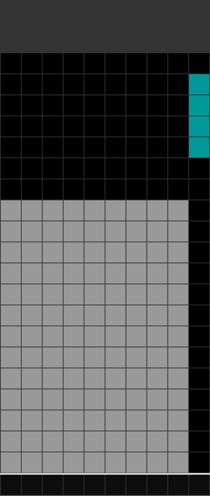
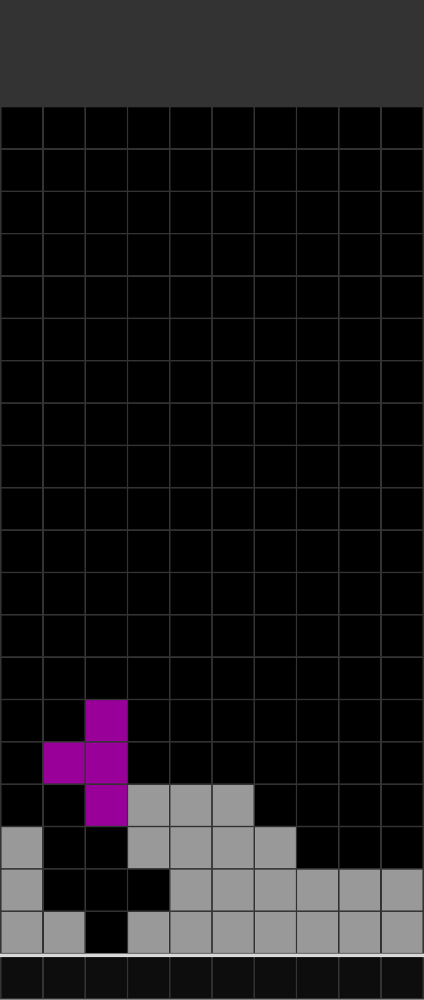
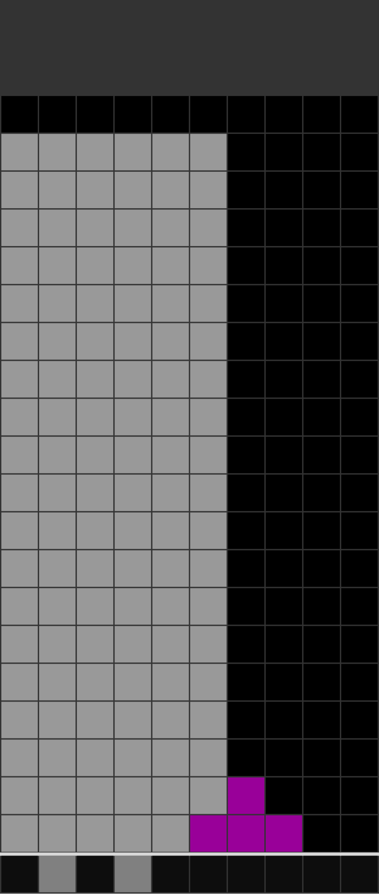

1. テトリスとは？
テトリスは、1984年に落ち物パズルゲームとして誕生し、世界中で愛され続けている超名作ゲームです。上から落ちてくる「テトリミノ」と呼ばれるブロックを操作し、横一列を隙間なく並べて消していくのが目的です。
2. 基本ルール
ゲームのルールは非常にシンプルですが、奥が深いです。
- ブロックの配置： 7種類の異なる形状のブロック（テトリミノ）がランダムに落ちてきます。
- ライン消去： 横一列（10マス）が隙間なくブロックで埋まると、そのラインが消滅します。
- ゲームオーバー： ブロックが画面の一番上まで積み上がってしまうとゲーム終了です。
3. スコアを伸ばす重要テクニック
ただ一列ずつ消すだけでなく、特定の消し方をすることで高得点（または対戦相手への強い攻撃）を狙えます。

テトリス/4列消し
縦長の「Iミノ」をギリギリまで温存し、一度に4ラインを同時に消す大技です。最も基本的かつ強力な得点源です。

T-Spin/Tスピン
「Tミノ」を狭い隙間に滑り込ませ、回転させてハメ込むテクニックです。高度ですが、通常の消し方より非常に高いスコアが得られます。

REN/コンボ
ブロックを連続で消し続けることです。連続回数（Combo数）が増えるほど、ボーナススコアが跳ね上がります。
4. 上達へのアドバイス
まずは「平らに積むこと」を意識しましょう。高く積み上がってしまっても焦らず、隙間を埋めるようにブロックを素早く判断して配置していくのが上達への第一歩です！